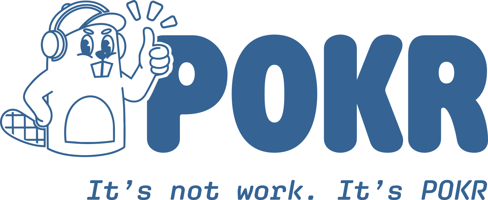

Work In Progress
De case study voor de Pokr App wordt momenteel nog verder uitgewerkt en gedocumenteerd. Binnenkort vind je hier alle details over het proces, het design en de uiteindelijke uitwerking van deze applicatie.

Een innovatieve applicatie-ervaring. (Deze case is momenteel in opbouw)
De case study voor de Pokr App wordt momenteel nog verder uitgewerkt en gedocumenteerd. Binnenkort vind je hier alle details over het proces, het design en de uiteindelijke uitwerking van deze applicatie.